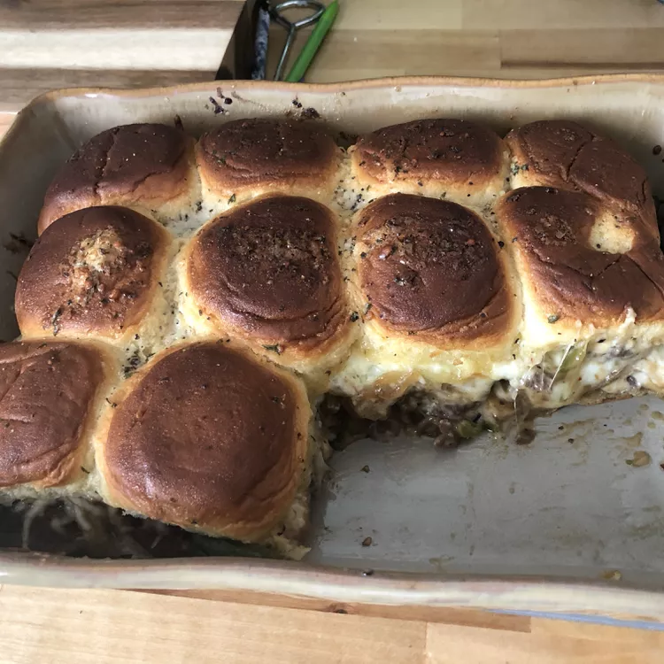

Philly Cheese Steak Sliders

Ingredients
- 1 (12 ounce) beef skirt steak, thinly sliced
- ½ large onion, chopped
- ½ large green bell pepper, chopped
- 1 (12 count) package Hawaiian bread rolls
- ¼ cup mayonnaise
- 8 slices pepper Jack cheese
- 2 tablespoons butter, melted
Directions
- Heat a large skillet over medium-high heat. Add steak, onion, and bell pepper; cook and stir until steak is browned and cooked to your liking and onions are tender, 7 to 10 minutes.
- Preheat the oven to 375 degrees F (190 degrees C). Line an 8x8-inch baking pan with aluminum foil.
- Slice the connected rolls in half widthwise to look like 2 giant slices of bread. Place the bottom half into the bottom of the prepared baking pan. Spread mayonnaise evenly on top.
- Place 4 slices of pepper Jack cheese over mayonnaise. Layer steak mixture and remaining cheese on top. Cover with the top half of the bread. Spread melted butter on top.
- Bake in the preheated oven until cheese is melted and bread is browned, about 20 minutes. Slice into individual portions.
Back To Top